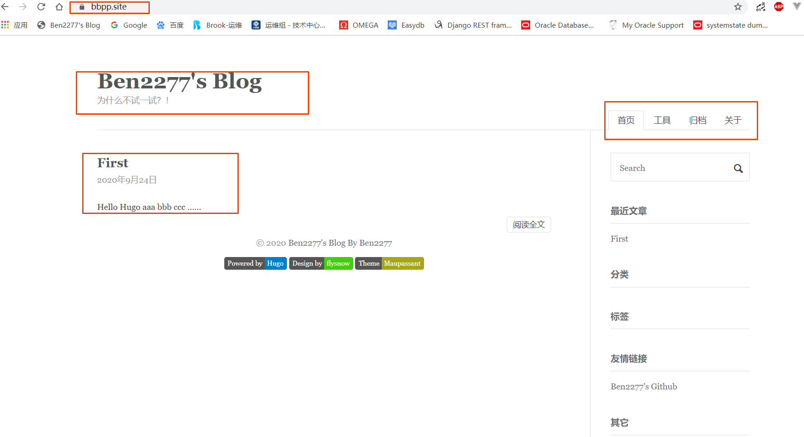

blog搭建日志
blog搭建日志
- 技术栈选择：
- GitHub Pages推出的目的是旨在托管GitHub库中的个人，组织或项目页面（GitHub Pages is designed to host your personal, organization, or project pages from a GitHub repository.）。
可以方便的省略购买服务器、域名等一系列复杂的操作，实现一个静态网站。 - Hugo是最受欢迎的开源静态站点生成器之一，拥有非常好的速度和灵活性，虽然Github Pages推荐使用Jekyll来进行渲染，但Hugo可以提供更加方便的体验
- GitHub Pages提供后缀为github.io的域名，如果希望可以拥有自定义的域名，可以直接在aliyun购买适合的（需要实名认证）并绑定到Github Pages
- GitHub Pages推出的目的是旨在托管GitHub库中的个人，组织或项目页面（GitHub Pages is designed to host your personal, organization, or project pages from a GitHub repository.）。
- 搭建步骤：
- 注册登录Github
- 新建一个GitHub repository，名称为[username.github.io]，username即GitHub账号
创建后就可以在浏览器访问(https://username.github.io)查看效果
- 安装Hugo
- 推荐在(https://github.com/gohugoio/hugo/releases)直接获取binary进行安装
- 使用
hugo version验证安装是否成功
- 新建一个Hugo站点
# ./hugo new site /usr/local/site/xxx_blog - 下载合适的Hugo Themes至xxx_blog/themes目录
[Hugo Themes]: (https://themes.gohugo.io)或者github上的其他hugo theme都可以，这里选择了(https://github.com/flysnow-org/maupassant-hugo)# yum install -y git # cd /usr/local/site/xxx_blog/themes # git clone https://github.com/flysnow-org/maupassant-hugo.git注：可以使用
hugo server --theme=maupassant-hugo --baseUrl="https://username.github.io/"进行本地验证
- 使用xxx_blog/themes/maupassant-hugo/exampleSite/下的config.toml替换xxx_blog/config.toml
# cp /usr/local/site/xxx_blog/themes/maupassant-hugo/exampleSite/config.toml /usr/local/site/xxx_blog/config.toml - 根据需求调整config.toml，参考(https://github.com/flysnow-org/maupassant-hugo)
- 创建blog页面（页面会生成在站点目录的content目录中）
// 文章页面 # hugo new post/first.md # vi content/post/first.md --- title: "First" date: 2020-09-24T16:47:25+08:00 --- aaa bbb ccc// 关于菜单页面 # hugo new about/index.md # vi content/about/index.md --- title: "关于我" date: 2018-06-01 12:34:56 description: aaa bbb ccc --- aaa bbb ccc// 归档菜单页面 # hugo new archives/index.md # vi content/archives/index.md --- title: "归档" description: 就归个档 type: archives ---// 搜索页面 # hugo new search/index.md # vi content/search/index.md --- title: "搜索" description: "搜索页面" type: "search" --- - 构建Hugo站点，默认静态站点将保存到public目录
# hugo - 将静态站点上传github
// 进入hugo静态站点 # cd public // git初始化 # git init # git config --global user.email "xxxxxxxxx@xxx.com" # git config --global user.name "xxxxx" # git remote add origin git@github.com:username/username.github.io.git // 添加git变更信息到本地 # git status # git add --all . # git commit -m "first commit" // 拉取&推送git变更到github（需要提前将ssh key添加到githubi，setting -> SSH and GPG keys） # git pull origin master # git push -u origin master注：hugo静态站点变更后的推送流程：
# hugo # cd public # git add --all . # git commit -m "change xxxxxx" # git push -u origin master - 此时通过username.github.io就可以访问到创建的hugo站点了
- 如果觉得github.io不够个性，也可以用个人域名进行替换
- aliyun购买域名，进行实名认证等
- 在aliyun解析中添加CNAME和A记录，分别指向username.github.io和username.github.io的IP地址（IP地址可以通过ping username.github.io获取）
- username.github.io的settings -> Github Pages的Custom domain中添加个人域名 -> 启用Enforce HTTPS
- 等待DNS解析生效后访问个人域名即可

- 注册登录Github
- 原文作者：Ben2277
- 原文链接：https://ben2277.github.io/post/2020-09-25-hugoblog-create-log/
- 版权声明：本作品采用知识共享署名-非商业性使用-禁止演绎 4.0 国际许可协议进行许可，非商业转载请注明出处（作者，原文链接），商业转载请联系作者获得授权。